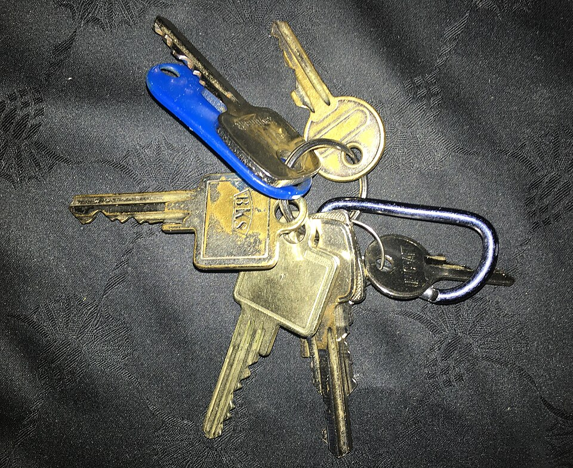

Sarahhax2210
Sarahhax2210
Good morning!
Nur das Schöne wird die Welt retten!
Fjodor Dostojewski
Nicht verzagen, Doc Alvers fragen!
Informatik — Grundkurs 11
Ausklang
Aufräumen, knobeln, danke sagen — und der Blick nach vorn
Nicht verzagen, Doc Alvers fragen!
Kapitel 01
Aufräumen
Accounts und Abgaben

Nicht verzagen, Doc Alvers fragen!
Wo wir stehen
Jahresrückblick und Ausblick auf Klasse 12 sind geschafft
Heute: Accounts und Abgaben aufräumen — dann Logik- und Denkspiele
Leitfrage: Was muss erledigt sein, bevor die Ferien beginnen?
Nicht verzagen, Doc Alvers fragen!
Checkliste zum Schuljahresende
Abgaben: Ist alles da — Portfolio, Projektdateien, Berichtigungen?
Eigene Dateien sichern: Was ihr behalten wollt, auf ein eigenes Medium — denkt an die 3-2-1-Regel
Accounts: Übungskonten löschen, die ihr nicht mehr braucht — Datenminimierung
Freigaben: geteilte Ordner schließen, die niemand mehr nutzt
Abmelden: an Schulrechnern nirgends eingeloggt bleiben
Nicht verzagen, Doc Alvers fragen!
Kapitel 02
Denkspiele
Logik zum Abschluss

Nicht verzagen, Doc Alvers fragen!
Die Türme von Hanoi
Erfunden 1883 vom französischen Mathematiker Édouard Lucas
Den Turm auf einen anderen Stab umsetzen — immer nur eine Scheibe auf einmal
Nie eine größere auf eine kleinere Scheibe legen; der dritte Stab hilft
3 Scheiben schafft man in 7 Zügen — allgemein braucht man Züge für Scheiben
Das Bild zeigt 8 Scheiben: Züge
Nicht verzagen, Doc Alvers fragen!
Zwei Rätsel
Wolf, Ziege, Kohl
Ein Bauer muss alle drei über den Fluss bringen
im Boot hat nur eins davon Platz
allein frisst der Wolf die Ziege und die Ziege den Kohl
Tipp: Man darf auch etwas zurückbringen
Lügner und Ehrliche
Auf einer Insel lügen die einen immer, die anderen nie
A sagt: „Wir beide sind Lügner.“
Was ist A, was ist B?
Nicht verzagen, Doc Alvers fragen!
Die Auflösung
Wolf, Ziege, Kohl: 7 Fahrten
Ziege hin, leer zurück
Wolf hin, Ziege zurück
Kohl hin, leer zurück
Ziege hin — alle drüben
Lügner und Ehrliche
Wäre A ehrlich, wäre sein Satz falsch — Widerspruch
also lügt A, und sein Satz ist falsch
nicht beide lügen — B ist ehrlich
Nicht verzagen, Doc Alvers fragen!
Kapitel 03
Danke und Ausblick
Was war, was kommt
Nicht verzagen, Doc Alvers fragen!
Rückblick und Ausblick
Unser Jahr
LB 1: Informatik als Wissenschaft
LB 2: vom Signal zum Wissen, Quellen, Präsentieren
LB 3: Schutzziele, Verschlüsselung, Datenschutz
LB 4: euer Projekt im Team
Wahlbereich: komprimieren, Fehler erkennen
Klasse 12
informatische Modellierung von Abläufen
Datenbanken: ER-Modell, Tabellen, SQL
Algorithmen und Programme — weiter in Klasse 13
ihr bringt mit: Probleme zerlegen, Modelle bilden
Nicht verzagen, Doc Alvers fragen!
Danke für ein Jahr voller Fragen, Projekte und guter Ideen — erholt euch gut, in Klasse 12 geht es weiter!
Danke
Nicht verzagen, Doc Alvers fragen!